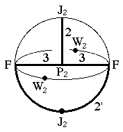

Underlying Topological Space: D3; Figure Pseudo-Symmetry (FPS): 2mm
Euclidean 3-Orbifold with Invariant-Lattice-Complex Letters
(left), Wyckoff Site Letters (right)
 
| FPS | Mult | Lattice Comp | Group Graph | Wyckoff Set | 2[4]Cover |
| 4-2 | F | 32' | a, b | ||
| 8-1 | P2 | 332 | c | ||
| 24-1 | J2 | 21' | d | ||
| 24-1 | F6[J2]F6 | 3<2'>3 | (e:a-b)1 | ||
| 32-2 | F8[-]P24 | 2'<3>32 | (f1:a-c, f2:c-b)2 | ||
| 48-1 | P26[-]J22 | 33<2>1' | (g:c-d)3 | ||
| 48-1 | m | h:e,d | |||
| 96 | 1 | i:fg,h | |||
| 48-2 | J22[W2]J22 | 2*=2<1'>2'2' | (h1:d-e)4,(h2:d-e)5 | #200(f,g) | |
| 48-2 | F12[-]J22 | 2*=23'<1'>2 | h3:a-d, h4:b-d | #225(h,i) | |
| 2 | 96-1 | P212[-]J24 | 2*=332<1>2'2' | i1:c-e | #226(h) |
| m | 96-2 | m* | (i2:gh1h2)6 | #200(j,k) | |
| m | 96-1 | m* | (i3:efg)7 | #225(k) | |
| Struct-Mult | Critical Points | Heegaard Surf | Wyckoff Cut |
| NaCl-1 | FF/J2/J2/P2 | H33m{1} | f1 f2 h |
| FCC -2 | FP2/3/J2/F | H322'm{1} | f1 g (e1); f2 g (e2) |
 201
201 203
203 Orbifold Atlas Home Page
Orbifold Atlas Home Page Crystallographic Topology Home Page
Crystallographic Topology Home Page